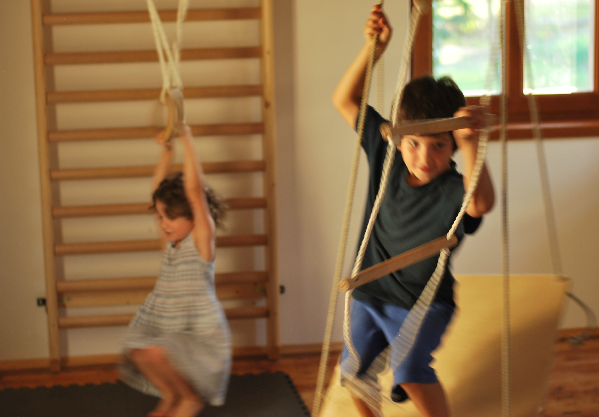

Hogyan történik a bejelentkezés?
A bejelentkezés e-mailben történik. Kérjük, fogalmazzák meg néhány mondatban a megkeresés okát, és írják meg telefonos elérhetőségüket is.
Az ellátás időbeli keretei
A folyamat hossza a gyermek és családja megismerése nélkül nem ítélhető meg felelősen. DSZIT esetén általában egy tanévet javaslunk kezdésképpen.
Mi a szülő szerepe?

A szülőkonzultációk segítik a terápiás élmények értelmezését, és a mindennapi helyzetek példáin keresztül árnyalják a gyermek viselkedésének, motivációinak és érzékenységeinek megértését.
Árlista
Anamnézis, kezdő szülőkonzultáció90 perc22 000 Ft
Csoportos DSZIT-foglalkozás50 perc8 000 Ft / fő
Egyéni DSZIT-foglalkozás50 perc15 000 Ft
Szülőkonzultáció / tanácsadás60–90 perc18 000–22 000 Ft
Évközi szakvélemény szülő kéréséretöbb találkozást követően8 000 Ft
Írásos szakvéleményt csak több találkozást követően tudunk felelősen kiállítani.